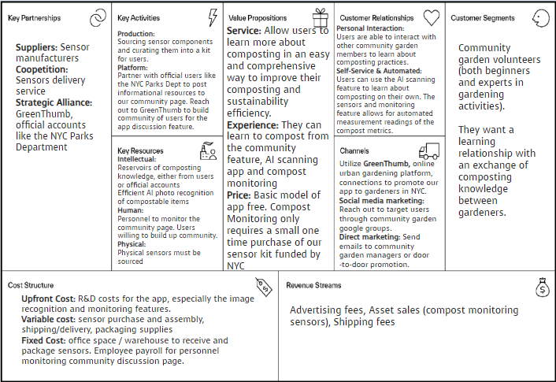

Compost Smart
Pitch:
Composting is key for maintaining a sustainable garden, yet busy NYC community gardeners struggle with compost pile optimization.
Composting is important but it seems like nobody knows how to do it right. Sure - there are google groups that share information, but they are disorganized and lacks specifics. Evenmore, knowledgeable gardeners don’t have the right bin to compost efficiently.
Enter CompostSmart to bring personalized information for your compost bins. Our bin and app empower volunteers by identifying optimal compost materials, monitoring essential metrics for compost health, and creating a network for gardeners to exchange tips on maintaining healthy bins.
Business Model

Pitch Video
Reflection:
For this project, my team and I endeavored to create a product tailored to the needs of New Yorkers, with a specific focus on optimizing solutions for repurposed urban spaces. Through comprehensive exploratory interviews, we identified a compelling opportunity within the realm of community gardens.
Collaborating closely with the dedicated volunteers at Westside Community Garden, we honed in on the inefficiencies surrounding compost bins, a key aspect of the gardening experience highlighted by user feedback. Using Figma, we crafted a high-level prototype to receive valuable insights from stakeholders.
This project challenged me to work on UX/UI prototypes, a first for me. It alos pushed me out of my comfort zone to engage directly with end-users, shaping our design approach according to their preferences and needs rather than relying solely on my own intuition. By placing the customer at the forefront, this project equipped me with invaluable experience in driving innovation through human-centered design principles.